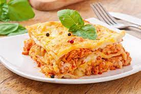
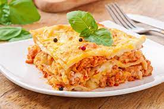

Imagenes de Gatos
Click para ver las imagenes de gatos
prueba de ir a la pagina principal 

Listas de Cosas que le gustan a los gatos aman
- comida
- luces laser
- jugar con lana
Enlace de Menu
enlace a comidas enlace a luces laser enlace a jugar con lanaComida
la comida preferida de los gatos es la lecha
Para los gatos siempre va a ser preferible los pescados con respecto a pollo y carne, porque el pescado tiene más fuente de ácidos grasos omegas que son benéficos para la salud del corazón, del pelo, la piel y los ojos”.
Luces laser
corre detras de una luz laseer
Fue construido por Theodore Maiman. El hecho de que sus resultados se publicaran con algún retraso en Nature, dio tiempo a la puesta en marcha de otros desarrollos paralelos. Por este motivo, Townes y Arthur Leonard Schawlow también son considerados inventores del láser, el cual patentaron en 1960.
Jugar con lana
jugar con un rollo de lana
La pura lana es la fibra natural que se obtiene de las ovejas y algunas cabras (incluso conejos). Es el pelo de estos animales, cuya finura, suavidad y capacidad para retener calor han enamorado al ser humano desde hace más de 10,000 años. Qué es la lana virgen… La alpaca, el guanaco, la llama, la cabra de cachemira, la vicuña y la oveja merina son los animales productores de esta fibra. Si quiere ampliar información y leer más sobre estos animales puede hacer click en este artículo dentro del blog: tipos de lana suave.
Lista de cosas ordenadas que los gatos odian
- los truenos
- Tratamiento antipulgas
- Otros gatos
prueba de una modificacion Confirmada con Git